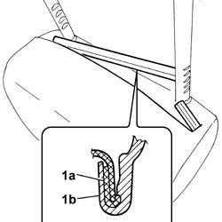
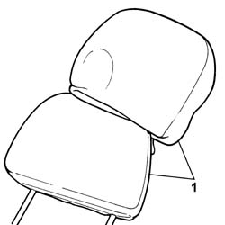

7045D51 Front seat HEAD RESTRAINT TRIM, left or right - R.R. with head restraint removed
- Path
- Procedures > 70 FITTINGS > 7045 FRONT SEATS > 7045D FRONT SEAT COVER/UPHOLSTERY > 7045D51 Front seat HEAD RESTRAINT TRIM, left or right - R.R. with head restraint removed
- Kind
- repair procedure (removal / refitting; the operation number is the code)
- Applies to
- all engines; all production periods
- Interactive page
- https://sloeber94.github.io/elrnDB-fPnd/en/#/2753260
Applies to: all engines; all production periods
 Removing
Removing
 Refitting
RefittingThis operation can only be carried out on head restraints fitted on top of the range seats because standard seats do not have head restraints with covers.
1. Release the rods (1a) and (1b) securing the head restraint cover.
2. Start this operation from one side of the head restraint cover.

Applies to: all engines; all production periods
1. Lift up the cover to separate it from the upholstery.

Applies to: all engines; all production periods
Refitting
RemovingCheck that the cover is intact and that there are no signs of wear or cuts.
Fit the trim to the padding.
Fit the retaining rods, checking that the fabric is taut and that there are no creases.